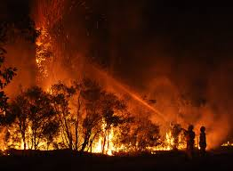

What Is Climate Change?
Climate change means to long-term shifts in temperatures and weather patterns. Human activities have been the main driver of climate change.Also, Earth is getting warmer because of pollution, like gas from cars and factories. This causes big problems like:
- Melting ice in the Arctic
- Rising sea levels
- Wildfires 


Cause and Effect
Cause:- Burning fuels (like gas, oil, coal)
- Deforestation
- Too much waste and pollution
- Human Activities
- Extreme weather
- Rising seas
- City flooding
- Wildfires and Droughts
- Health Risks
Solutions And Actions For Climate Change
- Use Clean Energy – Switching to solar, wind, and water power instead of fossil fuels helps reduce pollution and protect the environment.
- Live Sustainably – People can recycle, use reusable bags and bottles, and avoid plastic to reduce waste. Eating less meat also helps because raising animals for food causes pollution.
- Support Government Policies – Let's support goverment policies like the Paris Agreement that aims countries to work together to cut pollution, and COP summits bring leaders together to find better climate solutions.
- Take Small Actions – Saving electricity, using less water, and planting trees all help. People can also join cleanups, tree planting, and climate projects to spread awareness.
Let's Take Action
- Help Organizations – We can help groups like Greenpeace, WWF, and The Climate Reality Project to work to protect the Earth. We people can support them by donating, following their work, or sharing their message.
- Sign Petitions and Join Campaigns – Petitions ask leaders to take action on climate change. Also Campaigns like Fridays for Future and Earth Hour help spread awareness and bring people together for a cause.
- Join Events and Volunteer – We people can help by planting trees, cleaning up trash, joining climate marches, or going to events that teach about the environment. Volunteering with local groups is also a great way to make a difference.
- Spread the Word – Talking to others about climate change, sharing information online, and encouraging friends and family to help can make a big impact on world.
The Rising Sea Level Problem
Our city is close to the ocean, so rising seas could flood our homes, roads, and parks. We need to know how high the water could rise and how to block it with walls or barriers.
What is Trigonometry?
Trigonometry is one of the important branches in the history of mathematics that deals with the study of the relationship between the sides and angles of a right-angled triangle. It helps us measure heights, distances, and angles. We mostly use:
- Sine (sin) = opposite ÷ hypotenuse
- Cosine (cos) = adjacent ÷ hypotenuse
- Tangent (tan) = opposite ÷ adjacent
Angle of Elevation and Depression
Angle of Elevation: is the angle between a horizontal line from the observer and the line of sight to an object that is above the horizontal line.
Angle of Depression: is the angle between a horizontal line from the observer and the line of sight to an object that is below the horizontal line.
A Real Example Of Rising Sea Level And Using Trigonometry To Solve It
If the sea rises, and the wall is 10 meters from the city what will be the height of the wall?:
Finding The Height Of A Flood Wall
If we already know the angle and how far the wall is from the city (the adjacent side), we can find out how high the wall needs to be (the opposite side).
We use this formula:
adjacent × tan(angle) = opposite
Let’s say the wall is 10 meters away from the city.and the angle is 30°

We do:
10×tan(30°) = opposite
We use a calculator: 10×tan(30°) is about 5.77
So: opposite = 5.77 meters

That means the wall should be about 5.77 meters high to protect the city from the water at that angle. This is how trigonometry helps us stay safe!
Applying Angle Of Elevation And Depression In The Example
Imagine you are standing on the ground, looking up at the top of a flood wall. The angle between the horizontal line from your position and the line of sight to the top of the wall, is what you call the angle of elevation
Now imagine you're standing on top of the wall, looking down at the rising sea water. The angle between the horizontal line from your position and the line of sight to rising sea below, is what you call angle of depression
Our Plan
- Use Trigonometry To Protect Our City: By calculating the height and angles needed for flood walls, we can build stronger barriers to protect against rising sea level.
- Build smart flood walls: Using our math skills, we can teach others about designing the walls that are effective and affordable to buy, ensuring they can withstand future sea level rises.
- Teach others how to help: We aim to educate people in our community about climate change, what are the solution's to stop it, What to do when having climate change, and how they can use math to make a difference in the world.
- Share ideas through our website: We created this website so we can have information about climate change and how math can help to stop it. Sharing cool ideas, smart solutions, and teamwork, we can come up with ways to keep our mother earth safe and inspire others too!
Our Mission
Our mission is to help protect our mother earth from climate change by using easy math and teamwork. We want to teach people all abou climate change , build safe walls, and work together to keep our mother earth safe.Our Vision
Our vision is we want a future where everyone uses math and teamwork to solve big problems like climate change. Our dream is to make mother earth safer to live in for future generations, help mother earth, and inspire others to join us.Group 6
Members:- Alipio, Augustine Jhaye (Leader, Coder)
- Santos, Kalil (Coder)
- Arce, Ayesha (Researcher)
- Agbones, Caithleen (Researcher)
- Calcena, Carl Jacob (Researcher)
- Amorado, Darryl (Researcher)
- Valera, Kaileb Emmanuel (Researcher)
- Ting, Marvic Joven (Researcher)